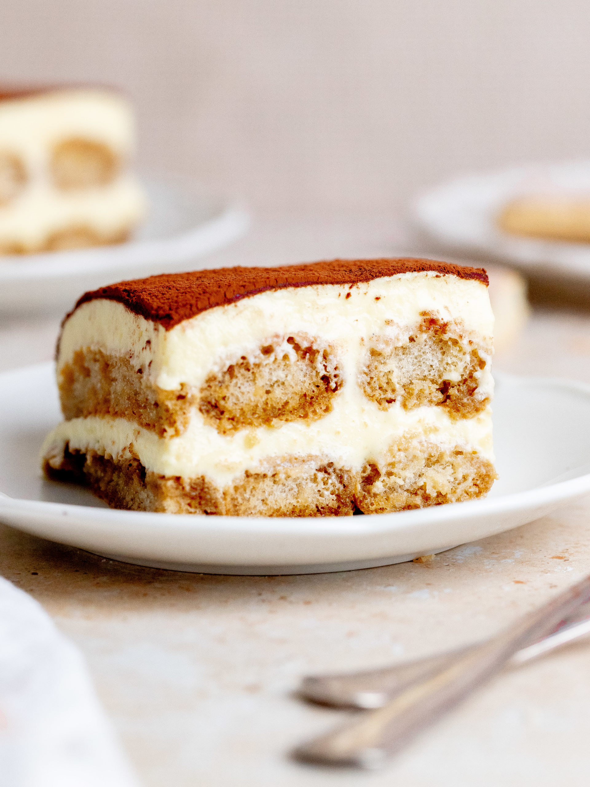

Tiramisu

Description
Tiramisu is a coffee-flavoured Italian dessert. It is made of ladyfingers dipped in coffee, layered with a whipped mixture of eggs, sugar, and mascarpone cheese, flavoured with cocoa. The recipe has been adapted into many varieties of cakes and other desserts. Its origins are often disputed among Italian regions such as Veneto, Friuli Venezia Giulia, Piedmont, and others. Most accounts of the origin of tiramisu date its invention to the 1960s in the region of Veneto, Italy, at the restaurant "Le Beccherie" in Treviso. Specifically, the dish is claimed to have first been created by a confectioner named Roberto Linguanotto, owner of "Le Beccherie". The recipe for tiramisu has been adapted into many varieties of cakes and other desserts.
Ingredients
- 6 large egg yolks
- 3/4 cup granulated sugar
- 1 cup mascarpone cheese
- 1 1/2 cups heavy cream
- 1 cup brewed espresso, cooled
- 2 tablespoons coffee liqueur
Preparation
- Beat the egg yolks and sugar: In a large bowl, use an electric mixer to beat the egg yolks and sugar until thick and pale, about 5 minutes. Add the mascarpone cheese and beat until smooth.
- Whip the cream: In a separate bowl, whip the cream until stiff peaks form. Gently fold the whipped cream into the mascarpone mixture.
- Combine the espresso and coffee liqueur: In a shallow dish, combine the espresso and coffee liqueur. Quickly dip each ladyfinger into the mixture, making sure not to soak the cookies.
- Assemble the tiramisu: In a 9x13-inch dish, arrange a layer of ladyfingers in the bottom. Spread half of the mascarpone mixture over the ladyfingers. Repeat with another layer of ladyfingers and mascarpone mixture.
Home